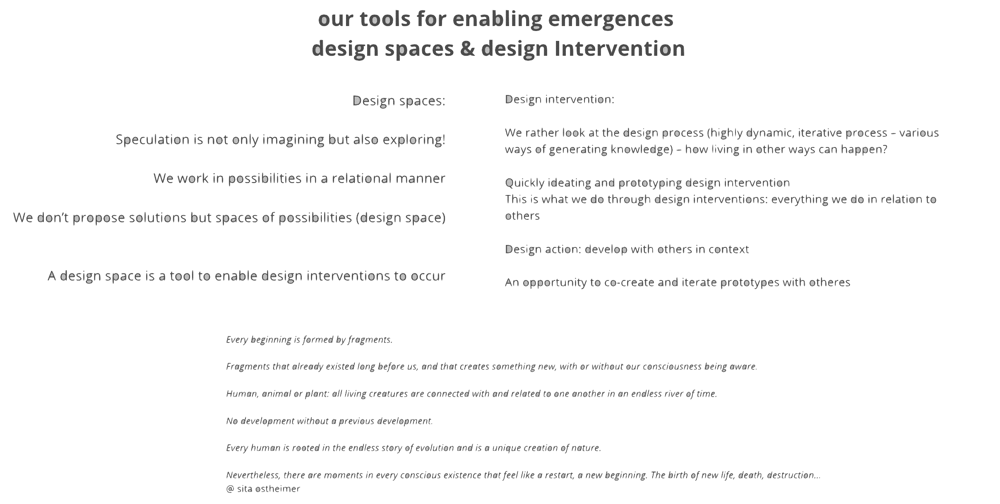

¶
design studio I¶
with Oscar Tomico and Mariana Quintero
the MDEF design studio aims to bring project ideas into an advanced concretion point, and execution plan. it is there to introduce us to the methodology the MDEF programm uses to imagine alternative presents. three phases are defining the structure of our year as well. in term 1 we deal with framing perspectives, in term 2 we iterate through practically the embodying of scenaios, and in term 3 we scale ideas and prjects up and build infrastructures for enabling. in the first term we will learn what it means to design for emergent futures, by analyzing pasts, presents and futures from first-person perspectives (1PP). we will look for weak signals and find out how they can have leverage. we will build our identity as designers and reflect on where our strengths lie and where we can have impact.
the aim is to develop a critical design practice by the end of the semester that operates in fertile areas of interventions built on mappings, cartographies, experiments, 1st person design activities and prototypes.
s¶
prototyping¶
prototyping as a tool for my design practice
prototypes can help to capture and visualize data. what role we assign to the prototype is important because the way we prototype will shape our projects and design processes. Oscar Tomico introduced us to four different roles that prototyping can play in design practice and enquiry processes.
(1) prototype serves as an experimental component: here a hypothesis is tested
(2) prototype serves as a means of inquiry: here an open-minded exploration is performed and the pt is the instrument
(3) prototype serves as a research archetype: here the pt serves as an illustration and demonstration to show possible results of the research
(4) prototype serves as a directing tool for inquiry: here the making-process (with all involved agents) of the pt is helping to direct the research
fast scaling and fast failing are important to the design practice as this is what helps to understand the granularity of situational contexts in which a design intervention is thought to have impact.
personal experience with these four roles of prototyping¶
a prototype’s role as a hypothesis tester is in my experience common in scientific and architectural research. at least in social research, we often make up hypothesis and then go on quantitative or qualitative investigations trying to falsify our assumptions. also in architectural design processes, I experienced the theoretical anticipation of certain scenarios and a subsequent practical approach of making small-scale models to test whether the ideas were accurate. for my project on unequal access to water (in terms of quantity and quality) I would like to investigate without prior assumptions. but I can imagine that at certain moments it makes sense to focus on a particular hypothesis and its application. this will help to concentrate the research area.
as a mean of inquiry, prototypes were essential to my bachelor-thesis that dealt with the influence of one’s social surrounding on one’s environmental attitude. the qualitative interviews I conducted had a clear guideline, which I adapted depending on the recipient and the situation. I conducted each interview only once and weaved the obtained data into my observations. another social research I implemented was a quantitative survey on the housing situation among art students in Amsterdam. the survey was my tool to obtain the data I was looking for. in both cases, the topic was clear yet there was no outcome assumed. to find out how water is consumed by the inhabitants of Barcelona, I can use prototypes of water filters, water measures etc. to obtain relevant data within a framework yet without prior expectations. Furthermore, I can be the prototype myself to observe patterns in water consumption (regarding quantity and quality).
as an archetypal prototype, I once wrote a fictional story about a future in which a virtual object provides the framework for a society that has sterilized themselves to the extent that Earth seems toxic in every sense. building on the data I have received from myself as a prototype, I can also use myself as an archetypal prototype: I can determine the access and the amount of water I have; I can embody what access and consumption looks like in different areas and situational contexts (in Barcelona and beyond), etc..
the last role of prototypes, the one where prototypes serve as vehicles for enquiry, is one that I have probably unconsciously explored a lot. here, the research itself directs the area of exploration. I’m thinking of building fires in nature, cooking when the fridge is empty, sharing beds when there are more people than pillows to sleep on.... here it is the process of making, looking for dry wood under bushes, mixing garlic and honey to make spice, stacking clothes to soften the ground.... All these things lead to observations, to insights that one would never have gained by defining an area of research or asking a question beforehand. the information and interest come while doing, while prototyping ideas. I think that this role also is the most interesting to my still very wide and open project. inequalities regarding water access is widely investigated theoretically and explored in many ways through practical interventions. I would like to explore openly and through a collaborative process with people and more-than-human beings what water means, to me, to others, to structures of inequality.
¶
the workspace: my research through design toolbox¶
with Oscar Tomico, Mariana Quintero and Tomas Diez
as a professional, we learn to be resilient and resourceful. we conduct research; designing enables us to learn and unlearn, therefore we call our practices research through design (RdT). whereas as professionals, we try to offer consistency and support, as individuals we grow and we change, we are hybrids that act in everchanging environments. I reflect on my my hybrid profile more detailed over in anther chapter.
what follows, is the trial to map the context in which I see my potentiality thriving.
who am I if not the one you see? ¶
the I only exist in the context in which the you perceive the me from its subjective context.
the context in which I move, shapes me as a professional in the sense that the physical and virtual access points available to me determine my possibilities for collaboration and creation. reflecting on my hyperlocal and hyperconnected work space in which I move physically and virtually, I become aware of what is available to me. here, I explore the access to resources I already have and what access I still need to expand my sphere of action in ways that widen its potentiality.
with the help of four areas of reflection, I can develop my workspace; I am thereby augmenting my subjective context.
my RtD toolbox¶
based on my ever-changing visions and identities that persist in my hybrid profile
areas of reflection:
(1) hardware – this includes the material and things,
(2) infrastructure and communities – this includes people and more-than-human relationships,
(3) theoretical contextualization – these include the guiding forces that shape my beliefs
(4) artistic conceptualization – this includes the sources of inspiration that shape my practice.

I aim to use my RtD toolbox to navigate actively through my design space of weak signals
to follow my sequential ideas, keep an eye on my drifting-process in which I center my topic of interest through which I hope to access my more wider conceptual interests.
¶
design interventions¶
with Oscar Tomico
having defined the design space in which I move, it was about time to talk about the active engagement in it. we are introduced to design interventions that can come in various shapes and colors. by intervening as designers in our design spaces, we are exploring rather than testing. we aim to start dialogues that evoke imagination and speculation. this deductive approach asks a great deal of reflection as you are constantly drifting around topics and contents…

first-person perspective (1PP)¶
the first-person perspective (1PP) is one of the research through design tools that works as an iterative design intervention. It aims to involve me personally and the embodiment of learning and unlearning.
me in action?


where it all comes together¶
in my simple design space and my multi scalar design space I will initiate my first interventions
interventions will occur throughout and nonstop. it is a continuous progress of engaging in collaborative practices.
¶
communication strategy¶
with Oscar Tomico and Jana
to document and develop an open design process, it needs to be communicated to fellow thinkers and sources of inspiration. this entails having an idea about the role of the communication – why do I want to communicate the process of my ideation and prototyping processes? and the medium of how this can be communicated best. as an exercise we thought about ways to communicate our current projects as they progress…
my water project evolves along an inductive investigation about narratives on access to fresh water. it aims to reframe commonly held beliefs about the infinite nature of access to freshwater and instead seeks to illustrate the global interdependencies inherent in the (unconscious) use of freshwater and the inequalities of its consequences.
What role does communication play in my open design processes?
• understanding my audience, is it human, non-human, both?
• providing visibility, transparency, knowledge, maybe realization-moments to water-consumers (human or/and non-human). Can it serve as a bridge to communities that care and use water differently?
• compiling (material) samples, cataloguing as a demo of my research
What medium can serve to communicate my open design processes?
• printed newspaper/magazine to reach the local community.
• stand alone website for a specific project (or event)
• QR code attached to a physical object that leads to a digital space
• infographics, writing, photographing, video and audio recordings
based on my inspirations of man-nahata and the feral atlas, I made a website to follow the open design processes for now: